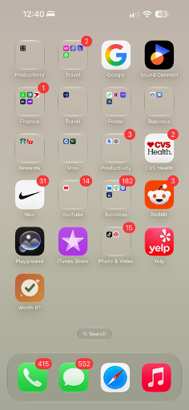
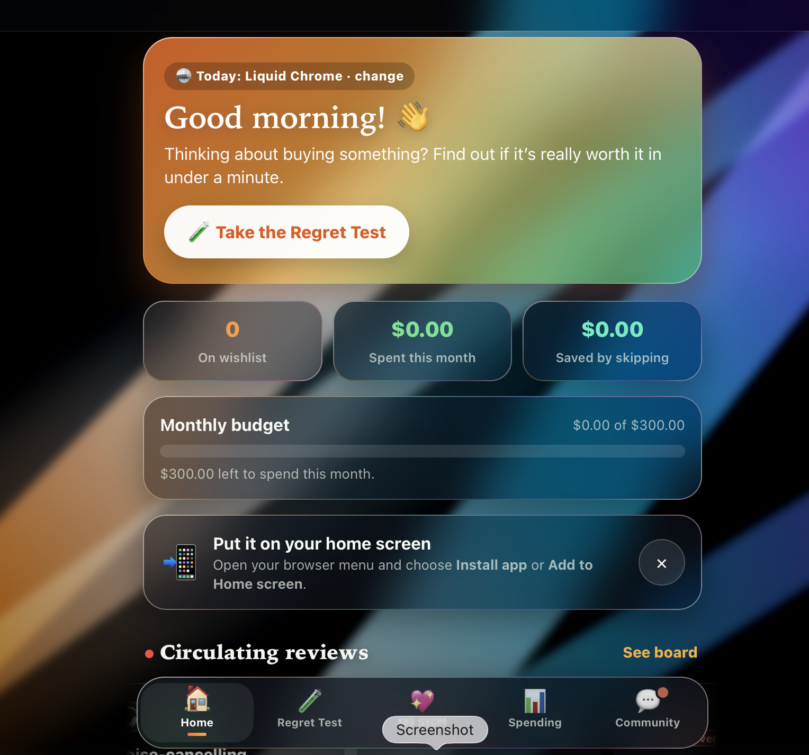

I am pursuing regulatory, compliance and privacy law. I plan to begin my career at a midsize firm and eventually serve at a government agency.
How I use AI
Today, I use AI to work more efficiently. It checks my grammar, helps me verify facts, outlines documents, finds news in regulatory and privacy law, and turns my notes into outlines, quizzes and flashcards. When I start practicing, I look forward to handing it the tasks that take up the most time: organizing files and deadlines, sorting through emails, collecting sources and preparing documents for review. That leaves more of my time for the work that needs a lawyer. I do not use AI to draft memoranda or motion briefs, and I never let it replace my own legal judgment.
A daily newsletter that keeps me current on AI regulation in the legal and tech fields.
The problem
Regulatory lawyers need to follow how AI is developing worldwide and the risks it creates when it goes unchecked. I realized I had underestimated how powerful AI is becoming and how concerned people around the world are about it.
What I built
A daily briefing covering four areas, drawn from the FTC, the SEC and the Federal Register. It covers the past year and reports news from outside the United States, especially China.
Figure 1. The front page of the Dispatch for Nov. 24, 2026.
The Fine Print · Entry 13 / 9
How I tested it
I ran seven daily briefings. Each delivered about ten articles and cases with source links, plus a list of sources it could not verify.
What I changed
I limited coverage to the past year, except for pivotal cases, and sorted the news by country and city. The 10/5 briefing followed both rules.
Limits and supervision
Some items in the unverified list were hallucinated. I search every title and check each link’s date, source and content.
What this shows
I am detail-oriented and creative. I built verification into the tool and shaped the briefing around my practice area.
Revision note
I took ChatGPT’s advice to name exact topics and set a rolling one-year window. I rejected its advice to change the article count, because ten accurate cases a day was already working.
An AI tool that reviews leases, contracts and service agreements and flags risky or inaccurate clauses.
The problem
Attorneys may rely on the tool alone. It can overstate a risk or miss one, so an attorney still has to read the contract and check every flagged clause.
What I built
Users upload an agreement and share their side: their role, state and concerns. The tool explains each risky clause in plain English, ranks it from high to low, and scores the contract’s overall risk out of 100.
I ran six different scenarios and reviewed every red flag the tool found.
What I changed
I added notes to every review: get changes in writing, a governance note, and the points an attorney must verify.
Limits and supervision
Some sources may be inaccurate, and the tool is overly cautious. An attorney must verify each risk and read the whole contract.
What this shows
AI can point an attorney to where to look. It cannot replace the attorney’s own reading of the contract.
Figure 3. Results for a fictional lease: risk level, “get it in writing,” and a flagged clause.
The Fine Print · Entry 26 / 9
Entry 3 of 3Consumer app
Worth It?
A consumer app that helps you decide whether a purchase or experience is worth the money.
The problem
To stay accurate, the app needs regular design changes and updates that keep up with the products being reviewed.
What I built
Users post photos of products, restaurants, clothes, books or trips, and others comment with their experiences. The app asks how much the item matters to you, your price range and how often you would use it. Then it gives a score out of 100.

Figure 4. Worth It? installed on my phone.
The Fine Print · Entry 37 / 9
How I tested it
I tested the app on my phone and in my internet browser. Every day, I uploaded a post about a product or restaurant I was interested in trying.
What I changed
I redesigned the interface several times and added private chats between users.
Limits and supervision
The app needs regular updates to keep giving accurate feedback on products. To make any change, I have to ask the system for it and then upload the new files into the app myself. Because of that, I have to check that the app stays up to date and that the information it gives is correct.
What this shows
AI tools adapt to what you envision, which leaves room to build creative ideas around your own interests.

Figure 5. The home screen: the Regret Test, a monthly budget and community reviews.
The Fine Print · Entry 38 / 9
Always read the fine print.
I built each of these projects with AI and checked each one myself: every source searched, every link opened, every flag read against the actual clause.